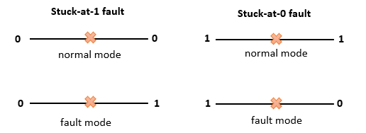

D-Algorithm -- Roth(1966)
The D-Algorithm (D-ALG) was developed by Roth in 1966.
Roth's D-Alorithm is a procedure which generates for a specific circuit and a "fault" associated with that circuit which detects the absence or presence of an malfunction in the circuit.
A fault is any change of a circuit which affects the functioning of that circuit
In the D-Algorithm we describe one type of faults in the circuit, namely, the stuck-at faults.
Stuck-at-1 faults and stuck-at-0 faults can be described as pseudogates on the line which have one input and one output.
On normal mode these "faults" passes the proper signal through and in fault mode passes the negation signal.

General goal of Roth's D-Alorithm:
The general goal of this algorithm is that an integrated circuit and a fault that can occur in the circuit. For this circuit, the algorithm locates a fault, which detects the generated output.
That means, with a fault pseudogate, a given set of inputs detects the fault if the output differ from the expectet outputs.